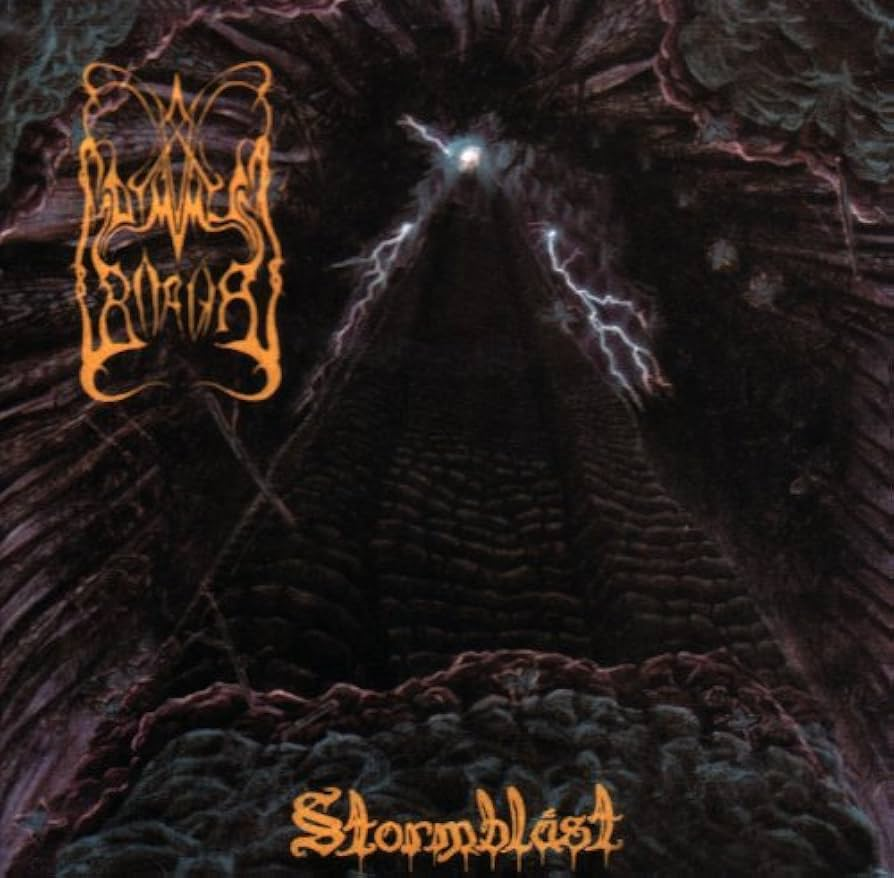
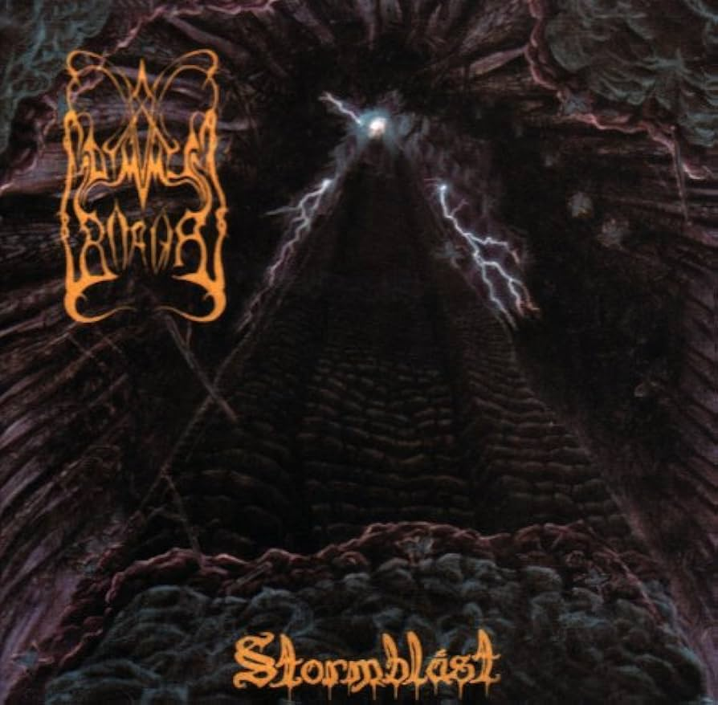

This page explores the various subgenres of Black Metal music.
Atmospheric Black Metal incorporates ambient and atmospheric elements, creating a soundscape that evokes nature and emotion. Bands like Agalloch and Wolves in the Throne Room are notable in this subgenre.
Symphonic Black Metal blends orchestral elements with traditional black metal, often featuring keyboards and symphonic arrangements. Bands like Emperor and Dimmu Borgir are key figures in this subgenre.
 

Post-Black Metal incorporates elements from other genres such as shoegaze and post-rock, characterized by its experimental sound and emotional depth. Bands like Deafheaven and Alcest are prominent in this subgenre.